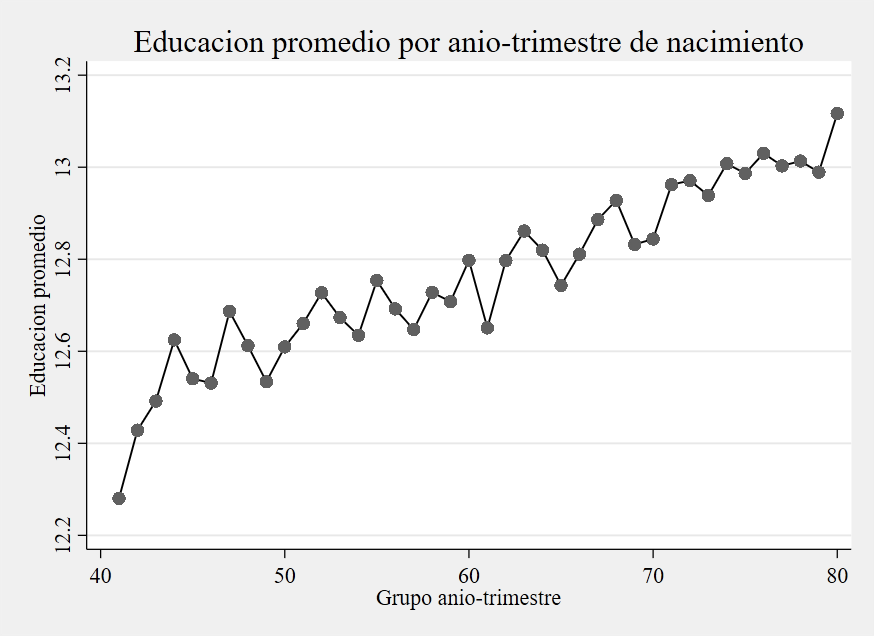
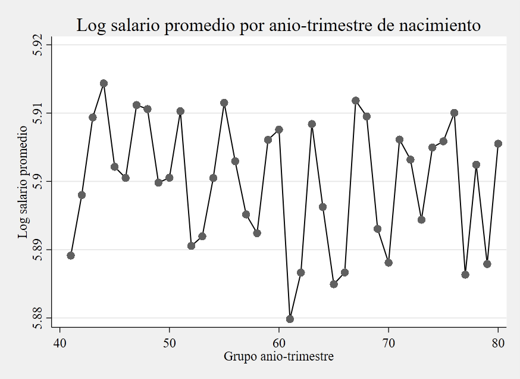

Retorno a la educación con IV: cuando una estrategia más rica puede debilitar la identificación
Lectura metodológica cauta del caso Angrist-Krueger en corte transversal
<- Volver al índice de Causalidad
En IV, una especificación conceptualmente más completa no siempre mejora la identificación
En esta aplicación, el retorno estimado de la educación cambia según cómo se defina el instrumento, y la versión rica tipo Angrist-Krueger termina con primera etapa débil.
Resumen ejecutivo
Esta pieza estima el retorno de la educación sobre el log del salario semanal con variables instrumentales en la cohorte 1930-1939 (N = 329,509). La comparación central no es “qué coeficiente es más alto”, sino qué tan creíble queda la identificación cuando se pasa de instrumentos simples a una arquitectura IV más rica.
La evidencia muestra un patrón nítido: con instrumentos simples, IV arroja coeficientes cercanos a 0.10 con primera etapa fuerte; en la especificación rica con controles e interacciones, el coeficiente cae a 0.0656 y la primera etapa se vuelve débil (KP rk F = 1.699).
Pregunta central
¿Qué efecto de la educación sobre el log del salario semanal puede sostenerse en esta muestra cuando la identificación IV usa trimestre de nacimiento e interacciones con cohorte?
Respuesta corta: el efecto estimado es sensible al diseño del instrumento. La especificación rica con controles e interacciones sugiere un retorno positivo, pero su lectura causal debe ser prudente porque la primera etapa es débil.
Datos y variables
- Unidad de análisis: individuos en corte transversal.
- Muestra de trabajo: cohorte de nacimiento 1930-1939 (
global muestra "inrange(AdN,1930,1939)"). - Resultado: log salario semanal (
logSalSem). - Variable potencialmente endógena: años de educación (
educ). - Instrumentos evaluados:
Z = 1(TdN==1),TdNnumérico, dummies de trimestre (qob_2 qob_3 qob_4) e interacciones trimestre x año de nacimiento (QOB x YOB), con y sin controles adicionales.
Por qué IV es causal en este caso
Esta no es una comparación de tratados y controles como en matching o IPWRA. Aquí la identificación causal se apoya en otra lógica: aislar la parte de educ que cambia por una fuente exógena (trimestre de nacimiento y sus interacciones con cohorte), y usar solo esa variación para estimar el efecto sobre salario.
En esa arquitectura, OLS puede mezclar el retorno de la educación con factores no observados que también afectan ingresos. IV entra en el módulo de causalidad porque intenta reconstruir un contrafactual causal a partir de variación exógena inducida por instrumentos, no porque sea solo una técnica alternativa de estimación.
OLS versus IV: qué cambia y por qué importa
El paso de OLS a IV importa porque educ puede estar correlacionada con factores no observados del salario. En este caso, sin embargo, la comparación no muestra un salto estable y unidireccional: depende del instrumento usado.
| Comparación base | Coeficiente de educ |
Lectura |
|---|---|---|
| OLS robusto (sin controles) | 0.0709 | Referencia descriptiva inicial |
| OLS robusto (con edad, edad² y cohorte) | 0.0711 | Referencia ajustada por observables clave |
IV con controles e interacciones (QOB x YOB) |
0.0656 | Estimación causal por IV positiva, pero con primera etapa débil |
La diferencia OLS-IV en la especificación con controles e interacciones es pequeña (0.0711 vs 0.0656), y el test Durbin/Wu-Hausman no rechaza exogeneidad (p = 0.8446). Esto no prueba exogeneidad verdadera. Además, con primera etapa débil, ese contraste puede tener baja potencia para detectar endogeneidad.
Evidencia descriptiva inicial


Los gráficos descriptivos muestran variación por grupo año-trimestre en educación (primera etapa descriptiva) y salario (forma reducida descriptiva). Ayudan a motivar la estrategia, pero no sustituyen los diagnósticos formales de relevancia.
Criterio de credibilidad para leer la comparación IV
Antes de mirar la tabla comparativa, la lectura del coeficiente IV debe pasar por un filtro simple: la relevancia de primera etapa. Si ese filtro es débil, la interpretación causal se vuelve más frágil, aunque el coeficiente puntual sea estadísticamente significativo.
En esta pieza, la comparación entre diseños IV no se interpreta como una competencia de coeficientes “más altos” o “más bajos”, sino como una tensión entre magnitud estimada y credibilidad de identificación.
Además, pruebas como Durbin/Wu-Hausman o Hansen ayudan a completar el diagnóstico, pero no sustituyen por sí solas el criterio de relevancia del instrumento.
Comparación principal de diseños IV
| Diseño econométrico | Coeficiente de educ |
Primera etapa (KP rk F) |
Sobreidentificación (Hansen p) |
Lectura |
|---|---|---|---|---|
| IV binaria (trimestre 1 vs resto) | 0.1020 | 66.782 | No aplica (exactamente identificado) | Estimación alta con primera etapa fuerte |
| IV ordinal (trimestre como 1-4) | 0.0992 | 100.989 | No aplica (exactamente identificado) | Resultado similar, con supuesto lineal entre trimestres |
IV con dummies de trimestre (T2, T3, T4 vs T1) |
0.1026 | 34.054 | 0.2365 | Primera etapa fuerte y mayor flexibilidad por trimestre |
IV con interacciones trimestre x cohorte (QOB x YOB) |
0.0891 | 4.801 | 0.6961 | Empieza a debilitarse la relevancia del instrumento |
IV con controles (edad, edad², cohorte + QOB x YOB) |
0.0656 | 1.699 | 0.6424 | Especificación conceptual central del taller, pero frágil por instrumentos débiles |
Con ese filtro de lectura, la tabla resume la evidencia comparativa para esta cohorte con estimaciones robustas en corte transversal.
Credibilidad empírica de la identificación
Endogeneidad (Durbin/Wu-Hausman)
Durbin/Wu-Hausman: p = 0.8446.
No rechazar exogeneidad no equivale a probar exogeneidad verdadera. En esta aplicación, además, la primera etapa débil reduce la capacidad de este test para discriminar con precisión.
Relevancia del instrumento (primera etapa)
KP rk F = 1.699.
Aquí está el principal cuello de botella empírico: la estrategia causal por IV está bien planteada, pero su credibilidad se debilita porque la primera etapa en la especificación con controles e interacciones es muy baja.
Sobreidentificación
Hansen J: p = 0.6424.
No rechazar sobreidentificación no certifica validez total del diseño. Menos aún cuando la relevancia del instrumento ya es baja.
Como contraste adicional, gmm2s en la misma especificación entrega un coeficiente cercano (0.0674). Eso sugiere estabilidad puntual frente al estimador, pero no corrige la debilidad de la primera etapa.
Qué lectura domina
En este ejercicio, IV no identifica un retorno único y universal: identifica efectos locales (LATE) asociados a la variación exógena específica que cada instrumento logra inducir sobre educación.
Por eso, cuando cambia el set de instrumentos, puede cambiar tanto la magnitud estimada como la población local efectivamente identificada. En los diseños simples, el retorno IV ronda 0.10 con primera etapa fuerte; al pasar al diseño con interacciones QOB x YOB y controles, el coeficiente baja a 0.0656 y la primera etapa se debilita de forma marcada (KP rk F = 1.699).
Cierre
Para esta cohorte, la evidencia sugiere un retorno positivo de la educación en casi todas las variantes, pero su interpretación causal depende de qué tan convincente sea la identificación por instrumentos.
La estrategia IV de este taller mantiene una lógica causal clara: aislar variación exógena en educación para estimar su efecto sobre salarios. En esta aplicación, el límite principal no está en esa lógica, sino en la fuerza empírica de los instrumentos en la especificación con controles e interacciones.
La lectura final es directa: IV aporta una identificación causal local (LATE), pero la credibilidad de esa estimación depende de instrumentos suficientemente relevantes. Aquí, la debilidad de primera etapa acota el alcance inferencial del resultado.